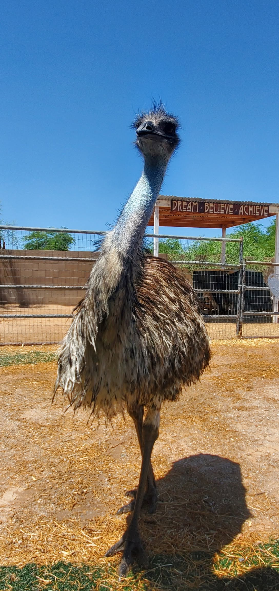
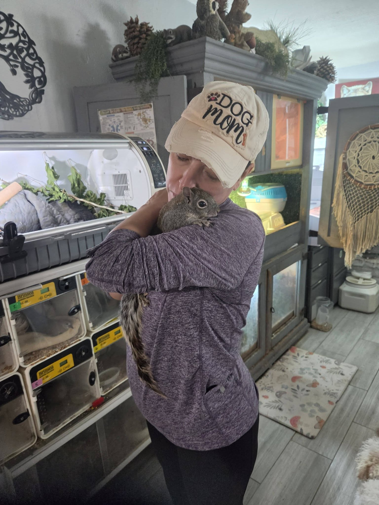
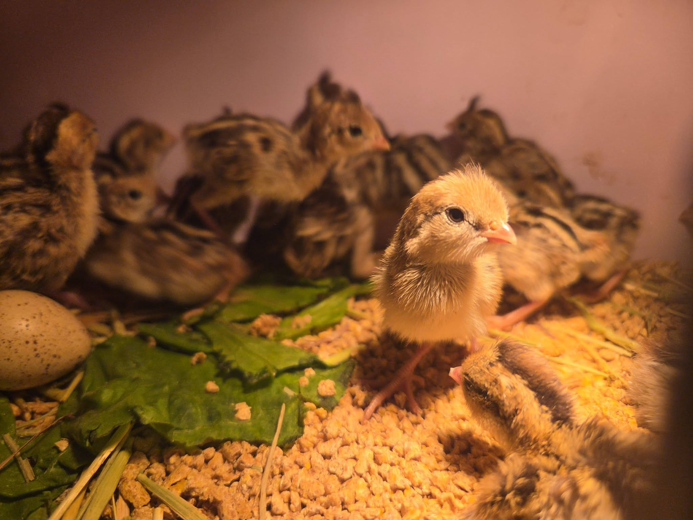

Emu
Large residents need secure spaces, enrichment, and attentive daily care.
Sponsor My CareEvery animal has a story
Some are healing, some are preparing for release or adoption, and others receive lifelong sanctuary. Each animal receives care shaped around its individual needs.
Ask about an animalPlease note: The Haven is not open for tours or drop-in visits. Intake, adoption inquiries, and other visits must be arranged in advance.

Currently calling the Haven home
Some are healing, some may be preparing for adoption or release, and others receive lifelong sanctuary. Select a resident to learn more.

Large residents need secure spaces, enrichment, and attentive daily care.
Sponsor My Care
Domestic birds receive safe housing, nutritious food, and care suited to their needs.
Sponsor My Care
Meet this reptile resident and see how specialized care and community support come together.
Meet This Resident
Wild patients are supported with the goal of a safe return to their natural habitat.
Follow Their Journey
The smallest patients may need warmth, frequent feeding, and close observation.
Sponsor My CareAvailability changes as animals heal and appropriate homes are found. Learn how adoption inquiries work and ask about current residents.
Every path matters
Animals move through the Haven in different ways, according to what is safest and most appropriate for each one.
Eligible animals who are healthy and ready to find an appropriate permanent family.
Ask about adoption →Patients receiving medical care, rehabilitation, rest, and time.
Support their care →Healthy wildlife preparing to return to the habitat where it belongs.
Ask about their stories →Animals receiving safe, individualized lifelong care.
Sponsor a resident →Reptile care partner
DubiaRoaches.com sponsors feeder insects for all reptiles in the Haven's care. Their generosity helps Crystal direct more resources toward medical care, habitats, and other urgent needs.
Help write the next chapter
Your support helps provide food, formula, medicine, habitats, and individualized care.